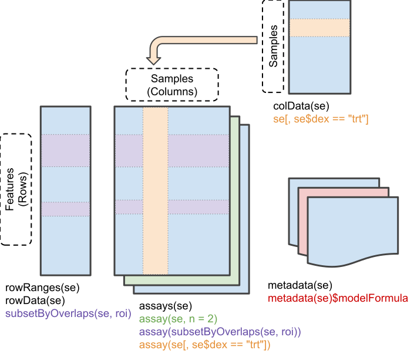
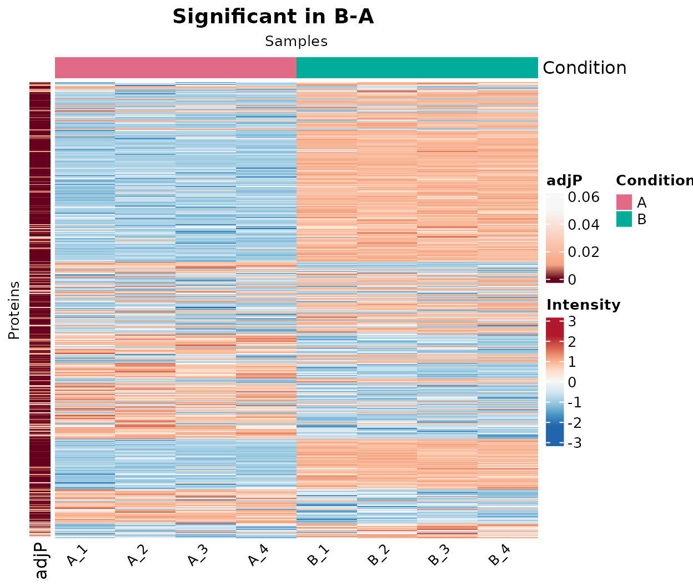

Introduction
NADIA provides a complete workflow for the analysis of protein quantification data from bottom-up proteomics. It starts from quantification reports exported by Spectronaut, DIA-NN or Proteome Discoverer and produces processed matrices, differential abundance results, tables and visualizations.
The name NADIA is derived from Missing Value-Aware Differential Abundance Analysis of DIA Proteomics Data, which summarizes the package’s main purpose: analyzing differential protein abundance while explicitly accounting for missing values. The name also brings together NA, the notation used by R for missing values, and DIA, data-independent acquisition, the proteomics context in which the package was initially developed. Although NADIA also processes TMT and label-free DDA data, the assessment and treatment of missing values remain central to its workflow because they are particularly frequent and consequential in DIA experiments.
These values do not always represent random measurement failures. Some may be associated with abundances close to or below the limit of detection and may therefore contain information relevant to differential abundance analysis. Removing every affected protein may discard biological signal, whereas unsuitable imputation may attenuate real differences or introduce artificial ones.
For this reason, NADIA treats normalization and imputation as decisions that should be evaluated rather than accepted as fixed preprocessing steps. The package includes 13 normalization methods and 19 imputation strategies, together with functions for comparing their performance on the data themselves or against a known reference.
This vignette provides a complete walkthrough of the workflow using a DIA experiment: data import, filtering, log2 transformation, normalization, optional batch correction, imputation, differential abundance analysis, method assessment, benchmarking and preparation of the results for downstream interpretation. The remaining vignettes examine each module in greater detail and can be read independently.
The suggested route through the documentation follows the order of the NADIA workflow:
| Step | Workflow stage and documentation | Question it answers |
|---|---|---|
| 1 | Import Spectronaut, DIA-NN, TMT and LFQ data into a common
proteomics_data object:
vignette("input-formats")
|
How do I import DIA, TMT or label-free (DDA) data? |
| 2 | Filter, transform to log2 and select among 13 normalization options: Filtering, log2 transformation and normalization in this vignette | How are proteins filtered, log2-transformed and normalized? |
| 3 | Optionally diagnose and correct batch effects using PVCA/BERT:
vignette("batch-correction")
|
How do I diagnose, correct and verify a batch effect? |
| 4 | Select among 19 imputation options, including combo,
softHybrid and limpa:
vignette("missing-values")
|
What do the missing values mean and how should I impute them? |
| 5 | Perform differential abundance analysis with limma or
limpa: Differential abundance results in this
vignette and vignette("missing-values")
|
How do I obtain and interpret differential abundance results? |
| 6 | Assess normalization and imputation methods:
vignette("choosing-methods")
|
How do I compare methods when no known reference is available? |
| 7 | Benchmark complete pipelines against known references or spike-in
experiments: vignette("benchmarking")
|
How do I evaluate pipelines using a spike-in experiment? |
| 8 | Run Pattern Profiler with Mfuzz:
vignette("pattern-profiler")
|
How do I identify proteins with similar profiles across conditions? |
| 9 | Create Highcharts, ggplot2 and ComplexHeatmap visualizations and
interactive reactable tables:
vignette("visualization") and
vignette("results-and-export")
|
How do I customize, export and share figures and result tables? |
The section NADIA and related Bioconductor packages at the end of this vignette compares NADIA with other Bioconductor packages for proteomics and shows how they can be used together.
Installation
Once NADIA is available on Bioconductor, it can be installed with
BiocManager:
if (!requireNamespace("BiocManager", quietly = TRUE))
install.packages("BiocManager")
BiocManager::install("NADIA")This vignette also uses ComplexHeatmap,
tidyHeatmap and highcharter, which are
optional;
BiocManager::install("NADIA", dependencies = TRUE) installs
them together with NADIA.
After installation, the package is loaded into the R session:
Example data
The example datasets used by NADIA originate from a common three-proteome spike-in experiment. Each sample contains a constant 80% Homo sapiens (HeLa) background and a reciprocal mixture of Escherichia coli and Saccharomyces cerevisiae proteins that accounts for the remaining 20%. Across conditions A to D, the E. coli fraction increases from 5% to 20%, whereas the yeast fraction decreases from 15% to 0%. The complete design comprises four pseudo-biological replicates per condition, giving 16 samples in total.

Complete three-proteome spike-in design underlying the example datasets. For distribution with NADIA, the datasets retain conditions A, B and D and 2,000 protein groups.
Condition D contains no yeast proteins. This structural absence means that yeast-derived protein groups are expected to show the greatest proportion of missing values in D, making this condition particularly informative for demonstrating NADIA’s missing-value-aware filtering, imputation and differential abundance workflow.
To protect unpublished results from an ongoing study and comply with Bioconductor package-size constraints, the datasets distributed with NADIA are reduced to 2,000 protein groups and three representative conditions—A, B and D—with four replicates per condition. Condition D is deliberately retained because its absence of yeast proteins provides an informative biological missingness scenario.
The 2,000 protein groups were selected at random from the full report using a fixed seed, rather than by retaining the proteins with the highest abundance or the most complete measurements. This is important because selecting only the best-quantified proteins would remove much of the missingness that NADIA is designed to examine. Random selection retains a missing-value structure close to that of the full experiment, including condition-specific non-detection patterns. Because selection was also independent of measured intensity, it does not deliberately enrich the example for high-abundance proteins. The observed abundance distribution should therefore be regarded as a representative approximation of the full experiment, although it was not explicitly forced to match it through stratified sampling.
The reduced DIA dataset used in this vignette was derived from a Spectronaut quantification report and therefore contains 12 samples and 2,000 protein groups.
The dataset is available in two forms. The first is a compressed quantification report, which allows the import and preprocessing steps to be shown from the beginning:
report <- system.file("extdata", "nadia_dia_report.tsv.gz", package = "NADIA")
dia <- preprocess_spectronaut(report, condition_order = c("A", "B", "D"),
verbose = FALSE)
dia
#> Preprocessed Spectronaut data
#> -----------------------------
#> Runs (metadata): 12
#> Proteins (ID): 2000
#> Proteins (QUANT): 2000
#>
#> Conditions: A, B, Dpreprocess_spectronaut() converts the long-format
report—one row for each reported combination of run and protein
group—into an object of class proteomics_data.
A proteomics_data object separates the information
contained in the report into three coordinated tables:
-
metadatacontains one row per sample or LC-MS run, including the sample identifier, experimental condition, replicate, and any available run-level information; -
protein_idcontains identification-level information for each protein group, including protein and gene annotations and, when available, run-specific evidence such as peptide and precursor counts, sequence coverage, and identification scores; -
protein_quantcontains the protein-level quantification data. It includes the abundance measured for each protein group in each sample, together with the protein annotation and quantitative evidence required by the downstream workflow.
In this example, metadata contains 12 samples, whereas
protein_id and protein_quant each contain
2,000 protein groups.
The three tables have different roles. metadata defines
the experimental design, protein_quant provides the
abundance matrix used for normalization, imputation and differential
abundance analysis, and protein_id retains the more
detailed identification evidence for inspection and reporting.
Here, condition_order = c("A", "B", "D") selects the
conditions to retain and sets the order used in the subsequent stages of
the analysis.
The same dataset is also distributed as an already preprocessed object, allowing the remainder of the workflow to be run without reading the report again:
nadia_dia is the object used throughout the rest of this
vignette.
How missing values are represented
Before processing the data, it is useful to check how missing values are represented because the encoding depends on the export format.
The Spectronaut report used here is in long format: each row
corresponds to a reported combination of run and protein group. When no
quantification is available for a particular combination, that
combination is absent from the report. When
preprocess_spectronaut() converts the report into the wide
protein_quant matrix, it completes the grid of protein
groups and samples and represents combinations absent from the report as
NA:
quant <- as.matrix(nadia_dia$protein_quant[
grep("^PG.Quantity_", colnames(nadia_dia$protein_quant))])
round(100 * mean(is.na(quant)), 1) # percentage of missing intensities
#> [1] 8.1
round(100 * mean(rowSums(is.na(quant)) == 0), 1) # complete proteins
#> [1] 72.2In the full experiment from which this reduced dataset was obtained,
11,679 of the 16 × 10,437 possible combinations of samples and protein
groups were absent, corresponding to approximately 7% of the matrix. In
nadia_dia, around 8% of the intensities are missing and
approximately one quarter of the protein groups contain at least one
missing value.
These missing entries are subsequently handled according to the filtering and imputation settings selected for the analysis.
Other export formats may encode absence differently. An empty cell
may be converted directly to NA during import, and
NaN is also recognized as missing by functions such as
is.na(). Some reports use zero as a marker of absence. In
an intensity matrix, zero requires explicit treatment because
log2(0) produces -Inf rather than a missing
value.
For this reason, normalize_proteomics() converts values
equal to zero into NA before applying the logarithmic
transformation and reports the number of conversions when
verbose = TRUE. No conversion is performed for
nadia_dia because the example matrix contains no zeros.
At this stage, no assumption is made about whether an individual
missing value should be regarded as MAR or MNAR.
vignette("missing-values") describes the working
assumptions used by NADIA and explains how missing values are assigned
to the available imputation strategies.
Filtering, log2 transformation and normalization
Before imputation and statistical analysis, NADIA prepares the
quantitative matrix in three stages. First, values equal to zero are
represented as NA, and proteins are retained according to
their presence within the experimental groups. The filtering criteria
are controlled by two arguments in
process_proteomics():
-
min_reps_filteris the minimum number of quantified replicates that a protein must have within a condition for that condition to satisfy the filter. When it isNULL, NADIA uses half the number of replicates in the smallest condition, rounded down. Innadia_dia, all conditions contain four replicates, so the automatically selected value is two; -
min_groups_filteris the minimum number of conditions that must satisfymin_reps_filter. Its default value is one, meaning that a protein is retained if it has sufficient observations in at least one condition.
The effect of the two criteria can be examined without running the
later stages of the workflow. normalize_proteomics()
exposes the same arguments as min_reps and
min_groups, respectively. The following code applies
several combinations and records how many of the 2,000 protein groups
are retained or removed:
filter_grid <- expand.grid(
min_reps_filter = 1:4,
min_groups_filter = 1:3
)
filter_counts <- do.call(rbind, lapply(seq_len(nrow(filter_grid)), function(i) {
filtered <- normalize_proteomics(
nadia_dia,
min_reps = filter_grid$min_reps_filter[i],
min_groups = filter_grid$min_groups_filter[i],
norm_method = "log2",
verbose = FALSE
)$filter_summary
data.frame(
min_reps_filter = filter_grid$min_reps_filter[i],
min_groups_filter = filter_grid$min_groups_filter[i],
proteins_before = filtered$n_total,
proteins_retained = filtered$n_keep,
proteins_filtered = filtered$n_drop
)
}))
filter_counts
#> min_reps_filter min_groups_filter proteins_before proteins_retained
#> 1 1 1 2000 2000
#> 2 2 1 2000 1997
#> 3 3 1 2000 1986
#> 4 4 1 2000 1962
#> 5 1 2 2000 1997
#> 6 2 2 2000 1984
#> 7 3 2 2000 1953
#> 8 4 2 2000 1877
#> 9 1 3 2000 1712
#> 10 2 3 2000 1607
#> 11 3 3 2000 1533
#> 12 4 3 2000 1444
#> proteins_filtered
#> 1 0
#> 2 3
#> 3 14
#> 4 38
#> 5 3
#> 6 16
#> 7 47
#> 8 123
#> 9 288
#> 10 393
#> 11 467
#> 12 556The default filtering rule for this dataset corresponds to
min_reps_filter = 2 and min_groups_filter = 1:
it retains 1,997 of the 2,000 protein groups. Increasing either
parameter makes the criterion more stringent. For example, requiring all
four replicates in all three conditions retains 1,444 protein groups and
removes 556.
Second, the retained intensities are transformed to the log2 scale.
Third, NADIA applies the method selected through
norm_method. Thirteen options are available, including
log2, which retains the log2-transformed values without
additional normalization. The untransformed matrix (the raw
assay), the log2-transformed matrix and the normalized matrix are kept
as separate assays in the resulting SummarizedExperiment
whenever they represent distinct processing stages.
The Normalization section of
vignette("choosing-methods") shows how to run and compare
alternative normalization methods. A separate optional filter,
max_na_prop, can remove proteins with a high overall
proportion of missing values immediately before imputation; it is
disabled by default and is documented in
?impute_proteomics.
Imputation of missing values
Normalization makes sample distributions more comparable, but it does not replace the values that remain missing. By default, NADIA therefore applies an imputation stage to the normalized matrix. Imputation estimates plausible values for missing entries from the observed data or from a model of the missingness mechanism. These estimates allow the subsequent analysis to use a complete matrix, but they are not new measurements and should not be interpreted as the unknown true values.
NADIA provides 19 selectable imputation strategies through
imp_method. They include methods designed for MAR or MNAR
values, the hybrid combo and softHybrid
strategies, and none, which leaves missing values
unchanged. The new halfmin option implements half-minimum
imputation: each missing intensity is replaced with half the global
observed minimum across all runs. The limpa route also
avoids filling the missing entries and instead accounts for them in its
probabilistic differential abundance model.
Each imputed result is stored as a new assay without overwriting the
normalized matrix from which it was generated.
vignette("missing-values") describes the assumptions behind
all available methods, explains how combo and
softHybrid assign missing values to different branches, and
shows how the choice of strategy can affect the differential abundance
results.
The workflow in a single call
process_proteomics() coordinates the main stages of the
analysis: filtering, log2 transformation, normalization, optional
batch-effect correction, imputation of missing values, and differential
abundance analysis. The function returns in memory the objects and
tables required to inspect, visualize and export the results.
The concise syntax does not, however, represent a parameter-free analysis. Every omitted argument is assigned either a fixed default or a value resolved from the data or the selected method. Using the short call therefore means accepting the following principal analytical choices:
| Stage | Default choice | Where it is explained |
|---|---|---|
| Filtering |
min_reps_filter = NULL is resolved automatically (two
replicates for this dataset), and min_groups_filter = 1
requires the criterion in at least one condition |
Filtering, log2 transformation and normalization above |
| Normalization |
cycloess, using the fast algorithm, three iterations
and a span of 0.7 |
Filtering, log2 transformation and normalization above and
the Normalization section of
vignette("choosing-methods")
|
| Batch correction | Not applied (batch_correct = FALSE) |
vignette("batch-correction") |
| Imputation |
combo, using Impseqrob for the MAR branch
and min for the MNAR branch |
Imputation of missing values above and
vignette("missing-values")
|
| Differential abundance | All pairwise comparisons with limma;
alpha = 0.05 and no additional log2 fold-change
threshold |
Differential abundance results below |
| Covariates and blocking | No additional covariates, paired design or biological-replicate blocking | vignette("batch-correction") |
| File export | No files are written because export_dir = NULL; all
results remain available in memory |
vignette("results-and-export") |
The complete call is shown below for transparency. Arguments that
belong to an inactive branch, such as the batch-correction settings when
batch_correct = FALSE, are still displayed so that the
configuration can be inspected in full.
Show the complete call and all default arguments
res <- process_proteomics(
preprocessing = nadia_dia,
# File export
export_dir = NULL,
# Filtering
min_reps_filter = NULL,
min_groups_filter = 1,
# Normalization
norm_method = "cycloess",
cyclic_loess_method = "fast",
cyclic_loess_iterations = 3,
cyclic_loess_span = 0.7,
# Optional batch correction
batch_correct = FALSE,
batch_column = "Batch",
batch_algorithm = "ComBat",
batch_ComBat_mode = 1,
batch_covariates = NULL,
batch_qualitycontrol = FALSE,
# Imputation
imp_method = "combo",
mar_method = "Impseqrob",
mnar_method = "min",
prop_na_mnar = 0.51,
prop_present_mar = 0.5,
min_present_mar = 1,
require_n_conditions = 1,
max_na_prop = NULL,
method_args = list(),
with_value = NA_real_,
# Differential abundance
comparisons = NULL,
control = NULL,
logFC_threshold = 0,
alpha = 0.05,
eBayes_trend = NULL,
eBayes_robust = NULL,
de_method = "limma",
# Covariates, paired designs and blocking
covariate_df = NULL,
covariate_column = NULL,
bio_replicate_column = NULL,
# Exported objects (used only when export_dir is supplied)
export_normalized = TRUE,
export_imputed = TRUE,
export_format = "tsv",
export_volcano = TRUE,
export_boxplot = TRUE,
export_pca = TRUE,
# SummarizedExperiment input only (see "Using NADIA together with other
# packages")
assay_name = NULL,
log2_input = FALSE,
# Progress messages
verbose = TRUE
)Accepting this configuration allows the complete analytical workflow
to be reduced to a single line. In the executable call below,
verbose = FALSE is used only to suppress progress messages
in the vignette; its default is TRUE, and changing it does
not affect the analysis.
res <- process_proteomics(nadia_dia, verbose = FALSE)
res
#> === Proteomics Processing Result ===
#>
#> SummarizedExperiment:
#> - Proteins: 1997
#> - Samples: 12
#> - Assays: raw, log2, cycloess, Impseqrob_min
#> - Conditions: A, B, D
#>
#> Differential Results:
#> - Total rows: 5991
#> - Comparisons: B-A, D-A, D-B
#> B-A: Up=325, Down=172
#> D-A: Up=374, Down=383
#> D-B: Up=286, Down=382
#>
#> Parameters:
#> - Normalization: cycloess
#> - Cyclic Loess method: fast
#> - Cyclic Loess iterations: 3
#> - Cyclic Loess span: 0.7
#> - Imputation: combo
#> - MAR method: Impseqrob
#> - MNAR method: min
#> - Alpha: 0.05
#> - logFC threshold: 0
#> - Output directory: (no export)For de_method = "limma", the unresolved
eBayes_trend = NULL and eBayes_robust = NULL
settings are both resolved to TRUE. Similarly,
comparisons = NULL and control = NULL request
all pairwise comparisons among the retained conditions.
These defaults provide a reasonable starting point, but they are not
a universally optimal choice. vignette("choosing-methods")
shows how to compare the alternatives on the data themselves, while
vignette("missing-values") explains the assumptions
underlying the available imputation strategies.
Where the processed data are stored
During processing, NADIA stores the quantitative matrices in a
SummarizedExperiment, the standard Bioconductor container
for matrix-like omics data. This object retains the input,
log2-transformed and normalized matrices and, when the corresponding
stages are applied, the batch-corrected and imputed matrices. Each
matrix is stored as a separate assay, so the object contains both the
intermediate processing stages and the normalized-and-imputed matrix
used for downstream differential abundance analysis.
A SummarizedExperiment keeps three coordinated
components:
-
assayscontain one or more quantitative matrices of identical shape, with protein groups in rows and samples in columns; -
rowDatacontains one row of annotation for each protein group; -
colDatacontains one row of metadata for each sample, including the experimental condition and replicate used to define the design.

Structure of a SummarizedExperiment object.
Figure reproduced from the SummarizedExperiment source repository, distributed under the Artistic-2.0 license.

These components share the same row and column indexing. Consequently, subsetting the object also subsets the corresponding protein annotation and sample metadata, preventing quantitative values from becoming misaligned with their identifiers or experimental groups.
During processing, the sample information required for the
experimental design is stored in colData, the protein-group
annotation required downstream is stored in rowData, and
every quantitative stage is retained as a separate assay. The detailed
protein_id table remains part of the original
proteomics_data object and can be inspected separately when
identification-level information is required.
The processed object is available as res$se_proc:
SummarizedExperiment::assayNames(res$se_proc)
#> [1] "raw" "log2" "cycloess" "Impseqrob_min"In this analysis, the assays correspond to successive stages of the workflow:
-
raw, the input quantification matrix; -
log2, the matrix after log2 transformation; -
cycloess, the normalized matrix; -
Impseqrob_min, the matrix after the hybrid imputation.
The Impseqrob_min assay is the complete quantitative
matrix obtained after the successive normalization and imputation
stages. In this analysis, it contains the intensities normalized with
cycloess, with the remaining missing values filled by the
default combo strategy: Impseqrob for values
assigned to the MAR branch and min for values assigned to
the MNAR branch. Thus, the data in Impseqrob_min are both
normalized and imputed, and this is the matrix used as input for the
subsequent differential abundance analysis. The assay name records the
two imputation methods, although complete reproducibility also requires
recording the normalization method, the function arguments and the NADIA
version.
Differential abundance results
res$DEPs_results holds the main table of the
differential abundance analysis:
head(res$DEPs_results, 4)
#> Protein.IDs Comparison Gene.Names logFC P.Value adj.P.Val
#> 1 A0A024RBG1 B-A NUDT4B 0.08293965 0.533563708 0.738922832
#> 2 A0A024RBG1 D-A NUDT4B -0.01391145 0.916061045 0.951169322
#> 3 A0A024RBG1 D-B NUDT4B -0.09685110 0.468736877 0.715101256
#> 4 A0A140T897;P02769 B-A ALB 0.13439560 0.000573106 0.003118509
#> Change Assay MissGlobal MissComp MissCND1 MissCND2
#> 1 No Change Impseqrob_min 0 0 0 0
#> 2 No Change Impseqrob_min 0 0 0 0
#> 3 No Change Impseqrob_min 0 0 0 0
#> 4 Up Impseqrob_min 0 0 0 0Each row corresponds to a combination of protein group and comparison. The same protein group may therefore appear in several rows if it takes part in more than one comparison.
The pairwise comparisons are built automatically from the conditions and the order defined during preprocessing:
res$comparisons
#> [1] B-A D-A D-B
#> Levels: B-A D-A D-B
table(res$DEPs_results$Change, res$DEPs_results$Comparison)
#>
#> B-A D-A D-B
#> Up 325 374 286
#> Down 172 383 382
#> No Change 1500 1240 1329The Change column classifies each result as
Up, Down or No Change by applying
the thresholds specified through alpha and
logFC_threshold together:
-
Up:adj.P.Val < alphaand a positive logFC, withlogFC >= logFC_threshold; -
Down:adj.P.Val < alphaand a negative logFC, withlogFC <= -logFC_threshold; -
No Change: does not satisfy both the adjusted-p-value and logFC criteria.
Here, alpha is the significance threshold applied to the
adjusted p-value stored in adj.P.Val; it is not the
adjusted p-value itself. With the default alpha = 0.05, a
result must have adj.P.Val < 0.05 to be classified as
significant. The unadjusted p-value remains available in
P.Value, but it is not used to assign the default
Change label.
The default logFC_threshold = 0 does not impose an
additional minimum effect-size requirement. Consequently, a significant
result with logFC > 0 is classified as Up,
whereas one with logFC < 0 is classified as
Down. Setting a positive threshold would require the logFC
to be at least that value for Up or at most its negative
value for Down.
Change is an interpretive label, not an additional
statistical test. The underlying evidence remains in logFC,
P.Value and adj.P.Val, and those values should
be consulted whenever the magnitude and the uncertainty of a result need
to be interpreted.
Relationship with the missing values
When imputation has been applied, the statistical result must be interpreted together with the information about the values that were missing before that stage.
NADIA keeps four columns, which go from the widest scope to the narrowest:
-
MissGlobal, the percentage of missing values of the protein group across every sample in the experiment, including the conditions that take no part in the comparison. It therefore does not depend on the comparison: a given protein group carries the same value in all of them. -
MissComp, the percentage across the replicates of the two conditions being compared, and only those. This is the figure that describes the evidence actually available for that contrast. -
MissCND1andMissCND2, the percentages in each of the two conditions separately. In aB-Acomparison,MissCND1corresponds to the numerator- and
MissCND2to the denominator (A).
- and
The distinction between the first two matters as soon as an
experiment has more than two conditions, as this one does.
MissGlobal is a property of the protein group in the
experiment, so it does not move from one comparison to the next;
MissComp does, because the replicates it counts change with
the contrast. A protein group that is missing in a single replicate of D
shows both behaviors at once:
pid <- with(res$DEPs_results, Protein.IDs[MissGlobal != MissComp][1])
subset(res$DEPs_results, Protein.IDs == pid,
c("Comparison", "MissGlobal", "MissComp", "MissCND1", "MissCND2"))
#> Comparison MissGlobal MissComp MissCND1 MissCND2
#> 46 D-A 8.33 12.5 25 0
#> 47 B-A 8.33 0.0 0 0
#> 48 D-B 8.33 12.5 25 0MissGlobal describes how well the protein group is
covered in the experiment as a whole, which is useful for deciding how
much to trust it at all. MissComp and the two per-condition
columns describe the support behind one particular contrast. None of
them determines whether a change is biologically real, but together they
distinguish estimates based mainly on measured intensities from
estimates that depend largely on imputed values.
The relationship between missingness and the differential call can be
summarized directly. MissComp is the right column here,
because what is being related to the call is the evidence available for
that particular contrast:
bins <- cut(res$DEPs_results$MissComp, c(-1, 0, 25, 50, 100),
labels = c("0%", "1-25%", "26-50%", ">50%"))
table(missing = bins, res$DEPs_results$Change)
#>
#> missing Up Down No Change
#> 0% 795 209 3761
#> 1-25% 90 57 239
#> 26-50% 70 619 54
#> >50% 30 52 15In this example dataset, most results with no missing values are
called No Change. Among results with 26–50 % missing
values, by contrast, there is a marked asymmetry: 619 are called
Down against 70 called Up.
This pattern does not prove that all those missing values are MNAR, but it is consistent with a substantial abundance-dependent component of missingness. When a protein group stops being quantified in one condition, values imputed from the lower end of the distribution can produce a large negative change.
Interpretation must always be made in the context of the missingness pattern and the imputation method used.
Detection and non-detection patterns between conditions
The most extreme case occurs when a protein group is not quantified in any replicate of one condition but is quantified in every replicate of the other:
onoff <- subset(res$DEPs_results,
(MissCND1 == 100 & MissCND2 == 0) |
(MissCND1 == 0 & MissCND2 == 100))
nrow(onoff)
#> [1] 500
head(onoff[, c("Protein.IDs", "Comparison", "logFC", "adj.P.Val",
"MissCND1", "MissCND2")], 4)
#> Protein.IDs Comparison logFC adj.P.Val MissCND1 MissCND2
#> 157 O13535 D-A -11.097985 5.054321e-18 100 0
#> 158 O13535 D-B -10.603939 8.186147e-18 100 0
#> 161 O13563 D-A -8.281384 1.823333e-16 100 0
#> 162 O13563 D-B -7.689337 3.907152e-16 100 0Roughly 500 results in this analysis have 100 % missing values in one group and 0 % in the other. These are detection versus non-detection patterns between conditions. They may represent biologically relevant changes, but they require a different interpretation from a ratio calculated entirely from observed intensities.
A logFC of around −11, for example, should not be interpreted as a directly measured abundance ratio. Its magnitude depends largely on the value introduced by the MNAR method, and it states that one condition lies below the quantifiable range relative to the other.
The MissCND1 and MissCND2 columns make this
distinction visible. In contrast, the p-value alone says nothing about
how many observations were measured and how many were imputed.
vignette("missing-values") develops this distinction and
explains how the different imputation strategies affect these
results.
Visualizing the results
process_proteomics() prepares three tables that can be
used directly by the visualization modules:
-
res$DEPs_results, for the volcano plots; -
res$BoxPlot_Input, to compare the sample distributions across the different assays; -
res$PCA_Input, for PCA and heatmaps.
The visualization functions take these tables rather than the
complete SummarizedExperiment, which means they can also be
applied to results that have been modified or produced by other
workflows, provided they keep the expected structure.
Interactive figures
NADIA produces interactive volcano plots, boxplots and PCA projections through Highcharts. Each function returns a named list whose elements correspond — depending on the module — to comparisons, assays or protein selection modes:
volcano <- volcano_highchart_list(res$DEPs_results)
boxplot <- boxplot_highchart_list(res$BoxPlot_Input)
pca <- pca_highchart_list(res$PCA_Input)
##
## volcano[["B-A"]]volcano[["B-A"]], for example, selects the volcano plot
for the B-A comparison. It shows the results obtained from
the matrix normalized with cycloess and imputed with the
default Impseqrob_min strategy:
vignette("visualization") shows interactive versions of
the three modules and explains their main customization options.
vignette("results-and-export") describes how to save each
widget as an HTML file.
All three take their input from res, so they can equally
be built from a saved analysis: write_nadia() puts the
whole thing — tables, parameters and provenance — into one file, and
nadia_result() gives back an object these functions accept
unchanged. See vignette("results-and-export").
Static figure
proteomics_heatmap() generates a static heatmap from
res$PCA_Input and can also select which protein groups to
display.
In the following example, mode = "target" restricts the
figure to protein groups that are significant in the comparison
specified by comparison:
hm <- proteomics_heatmap(
res$PCA_Input,
mode = "target",
comparison = "B-A",
scale_data = "row",
sample_order = "condition",
condition_order = c("A", "B", "D"),
show_row_names = FALSE,
heatmap_title = "Significant in B-A")
hm
The figure uses the following options:
-
comparison = "B-A"selects the comparison of interest; -
scale_data = "row"standardizes the profile of each protein group separately, so that color represents relative changes between samples rather than differences in absolute abundance between proteins; -
sample_order = "condition"groups the samples by condition; -
condition_order = c("A", "B", "D")sets the order of those conditions explicitly; withmode = "target"only the two compared are drawn, so D does not appear; -
show_row_names = FALSEhides the identifiers, which would otherwise be illegible when many rows are drawn.
The heatmap therefore shows the relative patterns of the selected protein groups across the eight samples of A and B. It should not be interpreted as a map of absolute protein abundances.
Further options for selection, clustering, ordering and customization
are described in vignette("visualization").
NADIA and related Bioconductor packages
Several Bioconductor packages cover parts of the same ground. The table below summarizes those closest to NADIA, as described in their own documentation, and how each one relates to it.
| Package | What it does | Relation to NADIA |
|---|---|---|
QFeatures |
Infrastructure that keeps PSMs, peptides and proteins of an experiment as linked assays | Complementary: NADIA stores its assays in a
SummarizedExperiment, which can be included in a
QFeatures object, and accepts one as input |
msqrob2 |
Robust linear (mixed) models for differential abundance from peptides or proteins, with a hurdle workflow that handles missing values without imputation | Can model NADIA’s normalized protein assay, missing values included |
DEP |
Workflow for label-free and TMT tables from MaxQuant or IsobarQuant:
filtering, vsn normalization, imputation with one of the
MSnbase methods, limma, plots and Shiny
apps |
The closest in scope; NADIA adds the points listed below |
limpa |
Models the probability of detecting each precursor to quantify
proteins and test them with limma without imputation |
Built into NADIA: imp_method = "limpa" and
de_method = "limpa"
|
proDA |
Probabilistic dropout model for differential abundance without imputation | Can take NADIA’s normalized assay, missing values included |
MSstats |
Feature-level statistical modeling for DDA, SRM and DIA, with converters for Spectronaut, DIA-NN, Proteome Discoverer and other tools | Its group comparisons can be scored with NADIA’s spike-in benchmark |
PRONE |
Evaluation of normalization methods, including batch correction
(IRS, limma), by intragroup variation, downstream
differential abundance and spike-in data |
NADIA uses its intragroup metrics and also evaluates imputation, for
which PRONE currently offers a single mixed method |
NormalyzerDE |
Screening of normalization methods, including a
retention-time-segmented approach, with an evaluation report and
limma or ANOVA testing |
Complementary for normalization, notably for retention-time effects, which NADIA does not address |
What NADIA adds
NADIA combines data import, processing, method assessment and reporting in a single protein-level workflow. Its main contributions are the connections between these steps and the attention given to missing values throughout the analysis:
A common starting point for different data sources. NADIA imports protein-level reports from Spectronaut, DIA-NN and Proteome Discoverer, including TMT and label-free data. It also accepts
SummarizedExperimentobjects containing protein abundances and sample conditions, allowing data prepared with other Bioconductor tools to enter the same workflow. For report-based inputs, sample information, identification evidence and quantitative measurements are retained in coordinated tables (vignette("input-formats")).Several ways to handle missing values. The 19 available strategies include individual imputation methods, hybrid approaches and options that leave values missing. In
combo, working MAR/MNAR assignments determine which of two methods fills each missing value.softHybridblends two estimates using a continuous weight, while thelimparoute models detection without imputing. NADIA also reports missing-value percentages for each protein, both across the experiment and within each comparison, to help interpret the evidence behind a differential result (vignette("missing-values")).Batch diagnosis and correction before imputation. PVCA helps assess the contribution of batch and biological factors to variation. BERT applies ComBat or
limmacorrection to incomplete matrices, with options to protect biological covariates. This allows batch effects to be addressed before filling missing values. The design and the available observations still determine which effects can be separated (vignette("batch-correction")).Differential abundance linked to missingness. NADIA supports testing with
limmaorlimpa; the latter carries quantification uncertainty into the test. Fold changes, p-values and missing-value summaries are returned together. This helps distinguish comparisons supported by measured values from those that depend strongly on imputation or condition-specific non-detection (vignette("missing-values")).Method assessment without a known biological reference. Normalization methods can be compared using
PRONE’s within-group metrics. Imputation methods can be assessed by hiding observed values and measuring how well they are recovered. These diagnostics help guide method choice, although recovery of held-out observations does not establish how well a method estimates genuinely unobserved values (vignette("choosing-methods")).Benchmarking when an expected result is available. For spike-in data, NADIA scores and ranks complete combinations of normalization, imputation and differential analysis using OpDEA metrics. This evaluates the downstream results of a pipeline, rather than an individual processing step alone. Results from other tools, such as
MSstats, can be adapted to the same format and included in the comparison (vignette("benchmarking")).Exploration of results. Pattern Profiler identifies proteins with similar abundance profiles across conditions, helping users explore coordinated changes. Interactive volcano plots, PCA plots and boxplots provide complementary views of differential abundance and sample variation. Interactive tables connect these results with identification, quantification and sample information for closer inspection of individual proteins (
vignette("pattern-profiler")andvignette("visualization")).Export and sharing of results. Figures and interactive tables can be saved as standalone HTML files, so collaborators can explore them in a web browser without running R. Table widgets also provide Excel export, while the processing workflow can write selected data tables for use in other tools. These options support both interactive reporting and further analysis (
vignette("results-and-export")).A saved record of the analysis. A single
.nadiafile stores imported data, results, processing parameters and input-file provenance. The analysis can be restored in R, and the underlying DuckDB database can be inspected with other DuckDB clients. The precision weights used internally bylimpaare not stored (vignette("results-and-export")).
NADIA analyzes proteins, not individual peptides or precursors. Its
default workflow imputes missing values before testing. With
imp_method = "none", limma receives the
incomplete matrix; the limpa route instead models
missingness and carries quantification uncertainty into the test.
Using NADIA together with other packages
NADIA can run limpa directly, pass its normalized data
to other analysis packages, or accept protein-level data prepared
elsewhere.
Run limpa within NADIA. Select it for both quantification and differential analysis:
res_limpa <- process_proteomics(nadia_dia, imp_method = "limpa",
de_method = "limpa")Analyze NADIA output with proDA or msqrob2. Use the normalized assay, which retains missing values. Convert the condition to an unordered factor for the usual treatment contrasts:
library(QFeatures) # also attaches SummarizedExperiment
library(msqrob2)
x <- assay(res$se_proc, "cycloess")
condition <- factor(res$se_proc$Condition, ordered = FALSE)
# proDA
fit <- proDA::proDA(x, design = condition)
proDA::test_diff(fit, B - A)
# msqrob2, through a QFeatures object
coldata <- colData(res$se_proc)
coldata$Condition <- condition
qf <- QFeatures(list(proteins = SummarizedExperiment(list(cycloess = x))),
colData = coldata)
qf <- msqrob(qf, i = "proteins", formula = ~ Condition)
qf <- hypothesisTest(qf, i = "proteins",
contrast = makeContrast("ConditionB = 0", "ConditionB"))
rowData(qf[["proteins"]])$ConditionBBring external data into NADIA. Supply a
SummarizedExperiment with proteins in rows, samples in
columns and conditions in colData()$Condition. This example
reconstructs that input from the bundled data:
quant_cols <- grep("^PG.Quantity_", names(nadia_dia$protein_quant))
intensities <- as.matrix(nadia_dia$protein_quant[, quant_cols])
rownames(intensities) <- nadia_dia$protein_quant$PG.ProteinGroups
se <- SummarizedExperiment::SummarizedExperiment(
assays = list(intensity = intensities),
colData = data.frame(Condition = nadia_dia$metadata$R.Condition,
Replicate = nadia_dia$metadata$R.Replicate),
rowData = data.frame(Genes = nadia_dia$protein_quant$PG.Genes))
res_se <- process_proteomics(se, verbose = FALSE)
identical(res_se$DEPs_results, res$DEPs_results)
#> [1] TRUEThe differential results match those obtained from the Spectronaut
input. Use log2_input = TRUE for log2 intensities and
assay_name to select among multiple assays. To convert the
input without running the analysis, use
preprocess_se().
The same approach accepts a protein-level assay from
QFeatures or protein estimates from limpa.
Aggregate precursors first: readDIANN() imports precursors,
whereas dpcQuant() estimates protein abundances. In the
examples below, condition labels must match the number and order of
samples.
# QFeatures: the protein-level assay, with the condition added to its colData
se <- qf[["proteins"]]
se$Condition <- c("A", "A", "A", "B", "B", "B")
res <- process_proteomics(se)
# limpa: precursors read from the DIA-NN report, summarized into proteins
y <- limpa::readDIANN("report.parquet")
dpc <- limpa::dpcCN(y)
yp <- limpa::dpcQuant(y, protein.id = "Protein.Group", dpc = dpc)
se <- SummarizedExperiment::SummarizedExperiment(
assays = list(log2 = yp$E),
colData = data.frame(Condition = c("A", "A", "A", "B", "B", "B")))
res <- process_proteomics(se, log2_input = TRUE)limpa already accounts for missingness when estimating
protein abundances; passing those estimates to NADIA does not carry over
its precision weights. To use NADIA’s own missing-value handling, import
the DIA-NN protein-group matrix with preprocess_diann()
instead (vignette("input-formats")).
Results from MSstats or other tools can also be adapted
to NADIA’s table format and compared in the same benchmark
(vignette("benchmarking")).
Next steps
This vignette has shown the complete workflow using NADIA’s default configuration. Those defaults provide a reproducible starting point, but they should not be interpreted as the best choice for every dataset.
One of the decisions with the greatest effect on the final results
table is the choice of normalization and imputation methods.
vignette("missing-values") explains the assumptions
underlying the available strategies, whereas
vignette("choosing-methods") shows how to compare them when
no known reference is available. When the experiment contains a
spike-in, vignette("benchmarking") evaluates them against
the expected changes.
To import your own data, adjust figures or export the results, see the vignettes linked in the introduction.
Session information
sessionInfo()
#> R version 4.6.2 (2026-10-29)
#> Platform: x86_64-pc-linux-gnu
#> Running under: Ubuntu 26.04.1 LTS
#>
#> Matrix products: default
#> BLAS: /usr/lib/x86_64-linux-gnu/openblas-pthread/libblas.so.3
#> LAPACK: /usr/lib/x86_64-linux-gnu/openblas-pthread/libopenblasp-r0.3.32.so; LAPACK version 3.12.0
#>
#> locale:
#> [1] LC_CTYPE=C.UTF-8 LC_NUMERIC=C LC_TIME=C.UTF-8
#> [4] LC_COLLATE=C.UTF-8 LC_MONETARY=C.UTF-8 LC_MESSAGES=C.UTF-8
#> [7] LC_PAPER=C.UTF-8 LC_NAME=C LC_ADDRESS=C
#> [10] LC_TELEPHONE=C LC_MEASUREMENT=C.UTF-8 LC_IDENTIFICATION=C
#>
#> time zone: UTC
#> tzcode source: system (glibc)
#>
#> attached base packages:
#> [1] stats graphics grDevices utils datasets methods base
#>
#> other attached packages:
#> [1] NADIA_1.1.0 BiocStyle_2.40.0
#>
#> loaded via a namespace (and not attached):
#> [1] gridExtra_2.3.1 rlang_1.3.0
#> [3] magrittr_2.0.5 clue_0.3-68
#> [5] GetoptLong_1.1.1 otel_0.3.0
#> [7] matrixStats_1.5.0 compiler_4.6.2
#> [9] png_0.1-9 systemfonts_1.3.4
#> [11] vctrs_0.7.3 stringr_1.6.0
#> [13] pkgconfig_2.0.3 shape_1.4.6.1
#> [15] crayon_1.5.3 fastmap_1.2.0
#> [17] backports_1.5.1 XVector_0.52.0
#> [19] rmarkdown_2.32 ragg_1.5.2
#> [21] highcharter_0.9.5 purrr_1.2.2
#> [23] xfun_0.62 cachem_1.1.0
#> [25] jsonlite_2.0.0 tidyHeatmap_1.13.1
#> [27] DelayedArray_0.38.2 broom_1.0.13
#> [29] parallel_4.6.2 cluster_2.1.8.3
#> [31] R6_2.6.1 bslib_0.12.0
#> [33] stringi_1.8.9 RColorBrewer_1.1-3
#> [35] limma_3.68.5 rlist_0.4.6.2
#> [37] rrcov_1.7-7 GenomicRanges_1.64.0
#> [39] lubridate_1.9.5 jquerylib_0.1.4
#> [41] Seqinfo_1.2.0 bookdown_0.48
#> [43] assertthat_0.2.1 SummarizedExperiment_1.42.0
#> [45] iterators_1.0.14 knitr_1.52
#> [47] zoo_1.9-1 IRanges_2.46.0
#> [49] Matrix_1.7-6 splines_4.6.2
#> [51] timechange_0.4.0 tidyselect_1.2.1
#> [53] viridis_0.6.5 abind_1.4-8
#> [55] yaml_2.3.12 doParallel_1.0.17
#> [57] codetools_0.2-20 curl_8.2.0
#> [59] lattice_0.23-1 tibble_3.3.1
#> [61] S7_1.0.0 Biobase_2.72.0
#> [63] quantmod_0.4.29 withr_3.0.3
#> [65] evaluate_1.0.5 desc_1.4.3
#> [67] rrcovNA_0.5-3 xts_0.14.3
#> [69] norm_1.0-11.1 circlize_0.4.18
#> [71] pillar_1.11.1 BiocManager_1.30.27
#> [73] MatrixGenerics_1.24.0 foreach_1.5.2
#> [75] stats4_4.6.2 pcaPP_2.0-7
#> [77] generics_0.1.4 TTR_0.24.4
#> [79] ggplot2_4.0.4 S4Vectors_0.50.3
#> [81] scales_1.4.0 glue_1.8.1
#> [83] tools_4.6.2 dendextend_1.19.1
#> [85] robustbase_0.99-7 data.table_1.18.6.1
#> [87] fs_2.1.0 mvtnorm_1.5-0
#> [89] grid_4.6.2 tidyr_1.3.2
#> [91] MsCoreUtils_1.24.0 colorspace_2.1-4
#> [93] patchwork_1.3.2 cli_3.6.6
#> [95] textshaping_1.1.0 viridisLite_0.4.3
#> [97] S4Arrays_1.12.1 ComplexHeatmap_2.28.0
#> [99] dplyr_1.2.1 gtable_0.3.6
#> [101] DEoptimR_1.2-2 sass_0.5.0
#> [103] digest_0.6.39 BiocGenerics_0.58.1
#> [105] SparseArray_1.12.3 farver_2.1.2
#> [107] rjson_0.2.23 htmlwidgets_1.6.4
#> [109] htmltools_0.5.9 pkgdown_2.2.1
#> [111] lifecycle_1.0.5 GlobalOptions_0.1.4
#> [113] statmod_1.5.2 MASS_7.3-66